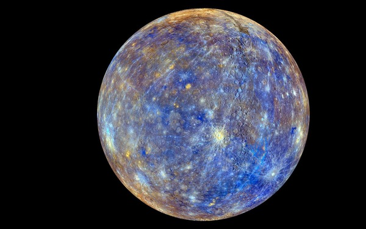

Огляд
Меркурій — найменша планета Сонячної системи, що рухається найближче до Сонця. Через малу відстань від зорі Меркурій має екстремальні температури і дуже тонку атмосферу.

Фізичні характеристики
- Радіус: ~2 440 км (≈0.38 радіуса Землі)
- Маса: ≈0.055 маси Землі
- Густина: висока — близько 5.43 г/см³
- Атмосфера: дуже розріджена, майже вакуум (екзосфера)
Орбіта та обертання
Меркурій має еліптичну орбіту і робить повний оберт навколо Сонця приблизно за 88 земних днів. Планета демонструє цікаве резонансне обертання: вона робить 3 оберти навколо своєї осі за 2 орбіти навколо Сонця (спін-орбітальний резонанс 3:2).
- Середній час орбіти: ~88 днів
- Аксіальний нахил: практично відсутній
- Доба (солярний день): близько 176 земних днів
Поверхня та дослідження
Поверхня Меркурія вкрита численними кратерами, гладкими рівнинами та скелями. Через слабку атмосферу кратери зберігаються дуже довго.
Космічні місії
- Mariner 10 — перші близькі проліти (1974–1975)
- MESSENGER — орбітальна місія, яка картографувала поверхню (2011–2015)
- BepiColombo — поточна двомодульна місія (ЄКА / JAXA) для детальнішого вивчення.
Цікаві факти
- Меркурій не має справжньої густої атмосфери, але має тонку екзосферу, утворену атомами, які вибиваються з поверхні.
- Всупереч очікуванням, в полярних кратерах Меркурія можуть зберігатися запаси водяного льоду — у постійній тіні.
- Гравітаційне поле Меркурія вказує на велике металеве ядро відносно розміру планети.
Джерела та посилання
Більш детальну інформацію можна знайти на сайтах наукових агентств та енциклопедіях: